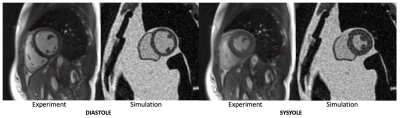

2181
Realistic Simulation of High-Performance Low Field Cardiac Cine Imaging1Electrical Engineering, University of Southern California, Los Angeles, CA, United States, 2Biomedical Engineering, University of Southern California, Los Angeles, CA, United States, 3National Heart, Lung, and Blood Insititute, National Institues of Health, Bethesda, MD, United States
Synopsis
There is renewed interest in high-performance low field imaging, especially for applications that are limited by susceptibility and SAR, such as cardiac CINE bSSFP imaging. Here, we demonstrate a framework for realistic simulation of 3D CINE bSSFP cardiac imaging at various field strengths. This is benchmarked against in-vivo data acquired on a high-performance 0.55 Tesla MRI. We utilize the XCAT phantom, 3D stack of spiral sampling, and realistic noise. This setup can be used to predict minimum field strength requirements and to test data sampling and reconstruction techniques.
Introduction
Over the last four decades, MRI has trended towards higher field strengths, motivated primarily by neuro, spine, and musculoskeletal applications. However, many indications benefit from lower field due to reduced SAR and susceptibility. There is renewed interest in high performance low field (HPLF) systems for advanced imaging1,2,3,4. We must rely on simulations to explore performance as a function of B0, because B0 is difficult and expensive to change in real instruments.Here, we demonstrate a framework for realistic simulation of 3D CINE bSSFP cardiac imaging at various field strengths. We utilize the XCAT phantom6,7, 3D stack of spiral sampling, and realistic noise. This setup may be used to predict minimum field strength requirements and to test data sampling and reconstruction techniques.
Methods
Three-dimensional dynamic anatomic masks were generated using XCAT software6,7. Simulated object parameters: 1 mm isotropic resolution; heart rate = 60 beats per minute; no respiration; and 40 RR intervals. Imaging parameters: Stack-of-Spiral bSSFP; TR/TE = 10ms/2ms; Tread = 6ms (keep constant for different field strengths); FA = optimized for maximum blood-myocardium contrast at each field strength; FOV 36x36x8cm3; resolution 2.81x2.81x4mm3, 8-arm uniform density spiral. Reconstruction: NUFFT9 in the kx,ky plane; FFT along kz; 25 cardiac phases without view sharing. Table 1 contains the T1, T2 and proton density values 5,6. Figure 1 illustrates the pipeline.Per-sample noise was measured on a 0.55T high performance low field scanner in a healthy adult subject8. This HPLF system is a customized commercial 1.5T system (MAGNETOM Aera, Siemens Healthcare, Erlangen, Germany) that was ramped down to operate as a prototype 0.55T system with retained gradient performance (45 mT/m amplitude, 200 T/m/s slew rate) and a retuned cardiac coil (18-channel, 6 anterior, 12 posterior). Virtual single-channel data was generated by applying coil compression10 on 18-channel k-space data for signal strength measurements (k-space origin) and per-sample noise measurements. We accounted for differences in slab thickness between the measurements (2D, 8-mm thick) and simulation (3D 80-mm thick) by assuming a 10-fold difference in signal at the k-space origin. Signal strength was scaled using the PD values and given to the Bloch simulator (see Figure 1), , where is the simulated field strength, and is a scale factor determined based on the 0.55T measurements. Complex-valued Gaussian noise was generated using the measured per-sample noise standard deviation.
Results
Figure 2 compares simulated 0.55T 3D CINE images against measured 0.55T 2D CINE images (66-shot spiral out; TR/TE = 8ms/4ms;18-channel receiver). There are substantial differences in spatial resolution, slab coverage, and precise readout scheme. However, the overall quality is comparable. This includes spiral artifacts in the short-axis plane.Figure 3 contains predictions of imaging quality for field strengths of 0.2T, 0.35, 0.55T, and 0.75T. All imaging and reconstruction parameters were the same except for bSSFP flip angles (80° for 0.2T, 76° for 0.35T, 72° for 0.55T, and 69° for 0.75T), which were optimized for maximum blood-myocardium contrast (see Figure 4). Left ventricular function is clearly visualized at 0.35T and above.
Discussion
Due to long T2* and reduced banding artifacts, HPLF is expected to open opportunities for novel data sampling and reconstruction with longer readouts and undersampling. This simulation platform would be useful for testing these new approaches.This framework could be used to determine minimum field strength requirements for cardiac CINE bSSFP imaging, as has been done for other applications11. This would require applying standard post-processing pipelines such as LV segmentation, for computation of volumes and regional wall motion.
This work has several limitations: 1) We assume on-resonance at all spatial positions. However, off-resonance is less of an issue at low-field because of reduced off-resonance and a fixed bSSFP null-to-null spacing (with a fixed TR). This also may be less of an issue if we switch to spiral in-out or trajectories where the center of k-space is acquired at TR/2 which experiences an echo12. 2) The XCAT simulation was scaled using in-vivo measurements from a different human subject. The object distribution impacts signal scaling, so it is a rough approximation to assume comparable signal per unit slab thickness. 3) We applied extreme coil compression (18 to 1), well beyond the intended use of this technique10. This is temporary until we develop models for coil sensivities as a function of field strength that can be applied to the XCAT phantom.
Conclusion
We have developed a simulation framework based on XCAT that is capable of predicting 3D bSSFP CINE imaging performance at various field strengths around 0.5 Tesla. Initial results indicate that single breath-hold 3D cardiac CINE imaging is viable on HPLF MRI systems. Adequate spatio-temporal resolution is demonstrated without any undersampling using only the increased efficiency of long-TR bSSFP and stack-of-spiral acquisitions.Acknowledgements
Grant Support: NIH R01-HL130494, American Heart Association; Research Support: Siemens Healthineers; We acknowledge the assistance of Siemens Healthcare in the modification of the MRI system for operation at 0.55T under an existing cooperative research agreement between NHLBI and Siemens Healthcare.References
1. Campbell-Washburn AE, Ramasawmy R, Restivo MC, Bhattacharya I, Basar B, Herzka DA, et al. Opportunities in Interventional and Diagnostic Imaging by Using High-performance Low-Field-Strength MRI. Radiology. 2019 Oct 1;190452.
2. Marques JP, Simonis FFJ, Webb AG. Low-field MRI: An MR physics perspective. J Magn Reson Imaging. 2019 Jan 13;58:1182–15.
3. Simonetti OP, Ahmad R. Low-Field Cardiac Magnetic Resonance Imaging: A Compelling Case for Cardiac Magnetic Resonance's Future. Circ Cardiovasc Imaging. 2017 Jun;10(6).
4. Stainsby JA, et al. Imaging at 0.5 T with high-performance system components. Proc. ISMRM 27th Scientific Session, Montreal, May 2019. p1194.
5. Bottomley, P. A., Foster, T. H., Argersinger, R. E. and Pfeifer, L. M. (1984), A review of normal tissue hydrogen NMR relaxation times and relaxation mechanisms from 1–100 MHz: Dependence on tissue type, NMR frequency, temperature, species, excision, and age. Med. Phys., 11: 425-448.
6. Segars, W. P., Sturgeon, G., Mendonca, S., Grimes, J., & Tsui, B. M. (2010). 4D XCAT phantom for multimodality imaging research. Medical physics, 37(9), 4902–4915.
7. Wissmann, L., Santelli, C., Segars, W. P., & Kozerke, S. (2014). MRXCAT: Realistic numerical phantoms for cardiovascular magnetic resonance. Journal of cardiovascular magnetic resonance, 16(1), 63.
8. Restivo M, et al. Long TR bSSFP Cardiac Cine Imaging at Low Field (0.55T) using EPI and Spiral Sequences for Improved Sampling Efficiency. Proc. ISMRM 27th Scientific Session, Montreal, May 2019. p1084.
9. Fessler JA. Image reconstruction toolbox. [http://web.eecs.umich.edu/~fessler/code/index.html]
10. Zhang T, Pauly JM, Vasanawala SS, Lustig M. "Coil Compression for Accelerated Imaging with Cartesian Sampling," Magn Reson Med 2013; 69: 571-58211. Wu Z, Chen W, Nayak KS. Minimum Field Strength Simulator for Proton Density Weighted MRI. PLoS ONE. 2016;11(5):e0154711.
11. Wu Z, Chen W, Nayak KS. Minimum Field Strength Simulator for Proton Density Weighted MRI. PLoS ONE. 2016;11(5):e0154711.
12. Scheffler K, Hennig J. Is TrueFISP a gradient-echo or a spin-echo sequence? Magn Reson Med. 2003 Jan 31;49(2):395–7.
Figures
